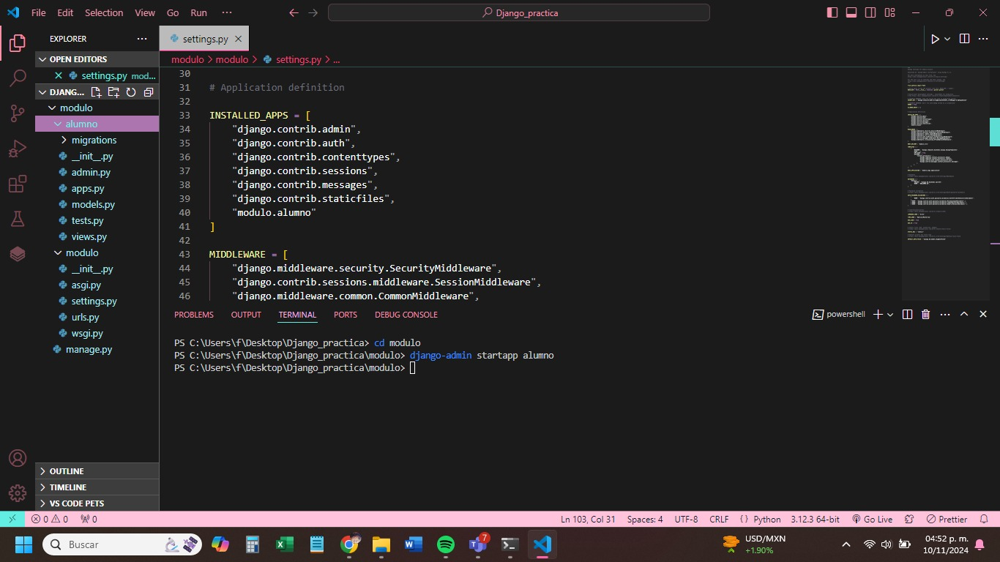
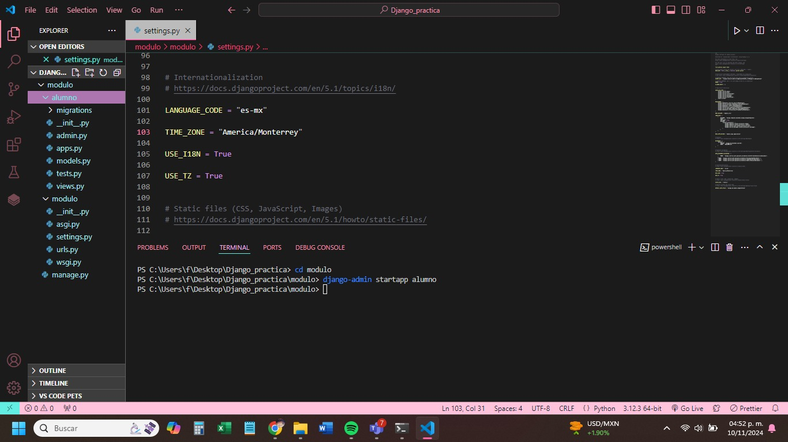
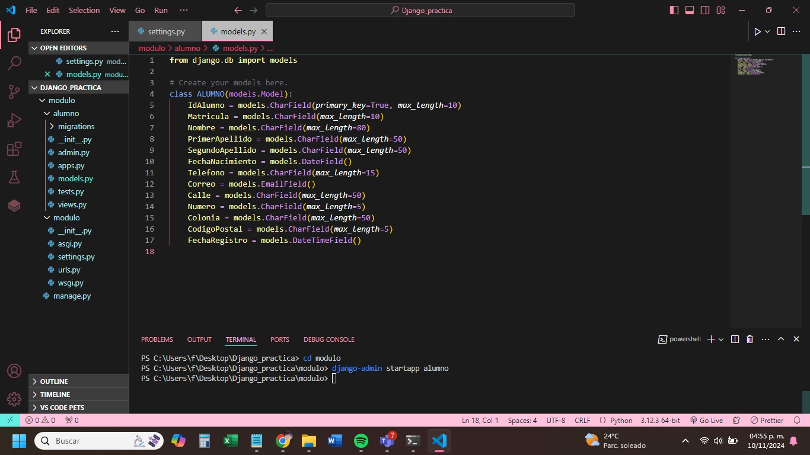
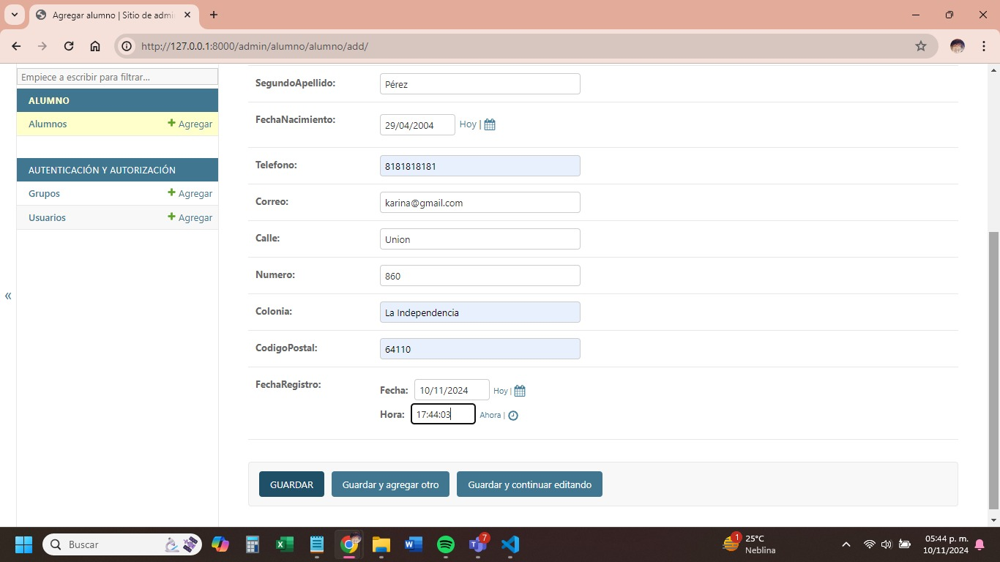

CONFIGURACIÓN INICIAL DEL PROYECTO Y APLICACIÓN WEB
1. En la consola/terminal seleccionar la carpeta física donde vamos a contener nuestro proyecto.
cd Desktop/Django/practica2
2. En la misma consola/terminal crear el nuevo proyecto
django-admin startproject modulo
3. Una vez creado el proyecto, abrimos la carpeta en Visual Studio Code y seleccionamos nueva terminal. Ahí creamos la nueva carpeta que contendrá las aplicaciones (módulos) de nuestro proyecto.
- Windows:
md modulo - Mac:
mkdir modulo
4. Ahora nos ubicamos dentro de la carpeta modulo
cd modulo
5. Una vez seleccionado la carpeta, creamos nuestra primer aplicación / módulo del sistema
django-admin startapp alumno
6. Una vez creado el proyecto volvemos a la raíz de la carpeta
cd ..
7. Ahora se tiene que registrar la nueva aplicación creada en el archivo settings.py de la carpeta principal (proyecto2)
INSTALLED_APPS = [
"django.contrib.admin",
"django.contrib.auth",
"django.contrib.contenttypes",
"django.contrib.sessions",
"django.contrib.messages",
"django.contrib.staticfiles",
"modulo.alumno"
]

8. En el mismo archivo settings.py configurar el nombre de la base de datos SQLite
DATABASES = {
"default": {
"ENGINE": "django.db.backends.sqlite3",
"NAME": "DBALUMNO.db",
}
}
9. Sobre el mismo archivo settings.py habrá que configurar el lenguaje y zona horaria para la configuración del proyecto.
LANGUAGE_CODE = "es-mx"
TIME_ZONE = "America/Monterrey"
USE_I18N = True
USE_TZ = True
Consultar: https://en.wikipedia.org/wiki/List_of_tz_database_time_zones
10. Ahora dentro de la aplicación creada (alumno) seleccionamos el archivo models.py para crear la arquitectura/modelo/clase que permite el mapeo de objetos relacionados “ORM” para la gestión de los datos en la base de datos.
class ALUMNO(models.Model):
IdAlumno = models.CharField(primary_key=True, max_length=10)
Matricula = models.CharField(max_length=10)
Nombre = models.CharField(max_length=80)
PrimerApellido = models.CharField(max_length=50)
SegundoApellido = models.CharField(max_length=50)

11. Sobre la misma carpeta seleccionamos el archivo admin.py el cual permitirá la gestión de la información con el administrador de Django.
from django.contrib import admin
from .models import ALUMNO
# Register your models here.
admin.site.register(ALUMNO)
12. Volvemos a la terminal para realizar la migración inicial de nuestro proyecto (ejecutar y registrar cambios), en la terminal se escribe el siguiente comando.
NOTA: Debemos estar en la carpeta raíz del proyecto (practica2). Si marca error hay que revisar el archivo app.py y colocarle el nombre de la carpeta.
python manage.py migrate
Si es necesario, también se puede agregar este código en el archivo app.py:
from django.apps import AppConfig
class alumnoConfig(AppConfig):
default_auto_field = "django.db.models.BigAutoField"
name = "modulo.alumno"
13. Ahora debemos migrar el modelo creado como una tabla de SQL por eso desde consola colocamos la sentencia.
python manage.py makemigrations
CONFIGURACIÓN DE CONTROL ADMINISTRATIVO DJANGO (SUPER USUARIO)
14. El superusuario va a permitir interactuar directamente con la interfaz de Django para el funcionamiento de permisos de administrador.
Ejecuta el siguiente comando en la terminal:
python manage.py createsuperuserIgnora cualquier error que aparezca y coloca el usuario, correo y contraseña cuando se te solicite.
Una vez hecho esto, vuelve a ejecutar:
python manage.py makemigrations15. Limpiamos/cerramos la terminal y ejecutamos el servidor
python manage.py runserver16. Listo, ahora que está configurado, podemos entrar al panel de administrador colocando la liga
Ingresa con el usuario y contraseña que creaste en el paso 14.
17. Una vez creado el usuario y entrado al admin, tenemos que hacer una nueva migración (por cada cambio aplicado) para poder crear registros y ver cambios.
python manage.py migrateNOTA: Si al actualizar el admin marca el error 404 es porque el servidor se apagó. Por lo que es necesario volver a ejecutarlo (paso 15).
18. Realizamos un registro de prueba dando clic en el botón “Agregar” dentro de la tabla.
Si todo está bien, veremos el resultado en la pantalla anterior. El problema es que no se distingue el registro (paso 19).
19. En el archivo models.py dentro de la carpeta de la aplicación, hay que agregar un método __str__ para poder crear una “vista” de registros dentro de los registros de la base de datos.
def __str__(self):
alumno_detalle = "({0}) {1} {2} {3} {4}"
return alumno_detalle.format(self.IdAlumno, self.Matricula, self.Nombre, self.PrimerApellido, self.SegundoApellido)
CREAR INTERFACES GRÁFICAS
20. Ahora bien, se tienen que crear las interfaces gráficas/templates HTML + CSS + JavaScript para que el usuario interactúe con la aplicación.
Para este paso, se puede cerrar sesión del admin de Django y apagar el servidor (CTRL + C en la consola) y cerrarlo.
Dentro de la carpeta de módulo, da clic derecho y crea una nueva carpeta bajo el nombre de templates. Hay que respetar este nombre porque Django reconoce a la carpeta como la contenedora de los archivos HTML.
NOTA: En caso de colocarle otro nombre es necesario crear una configuración adicional, pero no se recomienda.
21. Dentro de la carpeta templates creada, agrega un nuevo archivo HTML. En este caso se le denomina “adminAlumno.html”.
En este archivo se crea toda la interfaz gráfica de la aplicación utilizando HTML5 + CSS + JavaScript, y algunos frameworks externos como Bootstrap, FontAwesome, etc.
Ejemplo de archivo adminAlumno.html:
Alumno
Administración Alumnos
22. Para configurar el proyecto para que reconozca la página web por medio de la interfaz, debemos crear un nuevo archivo urls.py dentro de la aplicación para posteriormente configurar la nueva ruta de acceso.
from django.urls import path
from . import views
urlpatterns = [
path("", views.home)
]
23. Ahora debemos configurar el archivo views.py para poder acceder a la ruta creada en el archivo urls.py creado anteriormente.
from django.shortcuts import render
# Create your views here.
def home(request):
return render(request, "adminAlumno.html")
24. Posteriormente, vamos a la urls.py del proyecto en general y agregamos el conjunto de las rutas creadas dentro de las urls.py de la aplicación. Para eso, modificamos el archivo para que quede de la siguiente manera:
from django.contrib import admin
from django.urls import path, include
urlpatterns = [
path("admin/", admin.site.urls),
path("", include("modulo.alumno.urls"))
]
25. Volvemos a abrir una terminal y ejecutamos el servidor:
python manage.py runserver26. Si todo es correcto, ahora vamos a listar los registros de la base de datos en la interfaz. Para este paso nos dirigimos a views.py de la aplicación y modificamos lo siguiente:
from django.shortcuts import render
from .models import ALUMNO
# Create your views here.
def home(request):
lstAlumno = ALUMNO.objects.all()
return render(request, "adminAlumno.html", {"tblAlumno": lstAlumno})
27. Ahora en la interfaz agregamos una lista para mostrar los registros.
Alumno
Administración Alumnos
{% for a in tblAlumno %}
- {{a.Nombre}}
{% endfor %}
28. Para dar diseño, se utilizará principalmente Bootstrap y CSS. Para evitar pegar los CDN y todos los scripts en cada una de las páginas, vamos a crear un diseño general para todo el sitio. Para eso, creamos un archivo plantilla.html donde se encuentra el adminAlumno.html y vamos a pegar toda la estructura HTML y referencias externas.
Ejemplo de archivo
29. Como ya se tiene una plantilla, el archivo adminAlumno.html, ahora solo quedará de la siguiente manera.
Ejemplo:

FUNCIONALIDADES DEL CRUD EN DJANGO
CREATE
Debemos definir el botón Guardar de type submit, que es importante recordar que está dentro de las etiquetas de <form>.
1. Definición del Formulario
En el <form> se debe definir el action y el method, de la siguiente manera:
action: /registrarAlumno/(define la ruta de acceso a donde se enviarán los datos del formulario)method: post(método para obtener los datos externos de un formulario)
Adicionalmente debemos agregar de igual forma el bloque csrf_token que es una forma de “proteger” la información enviada al servidor:
2. Crear la URL en urls.py
Ahora debemos crear la URL que se definió anteriormente para el envío del formulario, dentro del archivo urls.py de la aplicación:
from django.urls import path
from . import views
urlpatterns = [
path("", views.home),
path("registrarAlumno/", views.registrarAlumno)
]
3. Crear la vista registrarAlumno en views.py
Marcará un pequeño error en la terminal debido a que aún no existe la vista registrarAlumno, por lo que debemos crearla dentro del archivo views.py de la aplicación. En esta vista se define la función que recibe los datos del formulario desde la interfaz gráfica:
from django.shortcuts import render, redirect
from .models import ALUMNO
# Create your views here.
def home(request):
lstAlumno = ALUMNO.objects.all()
return render(request, "adminAlumno.html", {"tblAlumno": lstAlumno})
def registrarAlumno(request):
# Aquí se maneja el formulario y se guarda el nuevo alumno
FUNCIONALIDADES DEL CRUD EN DJANGO
CREATE
Debemos definir el botón Guardar de type="submit", que es importante recordar que está dentro de las etiquetas de <form>.
Registrar Alumno
Para agregar un nuevo registro en la base de datos, se deben recuperar los datos del formulario y pasarlos al modelo de Django:
pIdAlumno = request.POST["txtId"]
pMatricula = request.POST["txtMatricula"]
pNombre = request.POST["txtNombre"]
pPrimerApellido = request.POST["txtPrimerApellido"]
pSegundoApellido = request.POST["txtSegundoApellido"]
alumno = ALUMNO.objects.create(
IdAlumno = pIdAlumno,
Matricula = pMatricula,
Nombre = pNombre,
PrimerApellido = pPrimerApellido,
SegundoApellido = pSegundoApellido
)
return redirect("/")
NOTA: Aquí van todos los campos de la tabla que son obligatorios. Se importa la librería redirect que permite redireccionar la aplicación después de realizar cierta acción. Posteriormente, la función registrarAlumno obtiene todos los valores de los <input> de la parte gráfica y los asigna a los objetos del modelo. Por último, se realiza la inserción a la base de datos por medio del método create y se retorna al inicio.
NOTA: Si no funciona, se recomienda apagar y volver a ejecutar el servidor.
- Apagar:
CTRL + Cdesde la terminal donde se está ejecutando. - En caso de marcar error, hay que agregar la propiedad
namea los controles con el mismo ID. Ejemplo:
Listo, ya debería estar haciendo registros.
READ
Esta acción básicamente ya la habíamos desarrollado en el archivo anterior, donde listamos los campos de la base de datos en la tabla.
Antes de hacer las acciones siguientes de editar y eliminar, es necesario diseñar los controles que permitirán realizar dichas acciones. Para eso, vamos al archivo adminAlumno.html que contiene la interfaz del módulo y editamos la tabla.